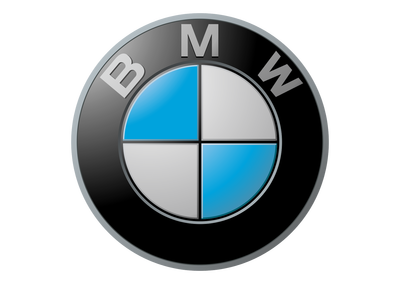

BMW

Bayerische Motoren Werke AG is a German luxury vehicle, motorcycle, and engine manufacturing company founded in 1916. It is one of the best-selling luxury automakers in the world. The company is a component of the Euro Stoxx 50 stock market index. Headquartered in Munich, Bavaria, BMW owns Mini cars and is the parent company of Rolls-Royce Motor Cars. BMW produces motorcars under the BMW Motorsport division and motorcycles under BMW Motorrad, and plug-in electric cars under the BMW i sub-brand and the "iPerformance" model designation within the regular BMW lineup.
Production
In 2006, the BMW group (including Mini and Rolls-Royce) produced 1,366,838 four-wheeled vehicles, which were manufactured in five countries. In 2010, it manufactured 1,481,253 four-wheeled vehicles and 112,271 motorcycles (under both the BMW and Husqvarna brands).
The BMW X3 (E83) was made by Magna Steyr, a subsidiary of Magna International, in Graz, Austria under license from BMW until 2010. More than 45,973 were produced in 2009. Starting October 2010, the new BMW X3 (F25) is produced at BMW US Manufacturing Company, Greer, South Carolina.
By 2011, about 56% of BMW-brand vehicles produced are powered by petrol engines and the remaining 44% are powered by diesel engines. Of those petrol vehicles, about 27% are four-cylinder models and about nine percent are eight-cylinder models. BMW also has local assembly operation using complete knock down components in Thailand, Russia, Egypt, Indonesia, Malaysia, and India, for 3, 5, 7 series and X3. On average, 9,000 vehicles per day exit BMW plants, and 63% are transported by rail.
Current models
The 1 Series, originally launched in 2004, is BMW's smallest car. Currently available are the second generation hatchback (F20/F21) and its two-door counterparts, the2 Series coupe and convertible (F22/F23). The 3 Series, a compact executive car manufactured since model year 1975, is currently in its sixth generation (F30); models include the sports sedan (F30), the fourth generation station wagon (F31) and the Gran Turismo. Starting with the current generation, the 3 Series coupe and convertible are now branded as 4 Series models (F32 and F33 respectively). The 5 Series is a mid-size luxury car, available in sedan (F10) and station wagon (F11) forms. The 5 Series Gran Turismo (F07), which debuted in 2010, created a segment between station wagons and crossover SUV.
BMW's full-size flagship executive sedan is the 7 Series. Typically, BMW introduces many of their innovations in the 7 Series, such as the system. The latest generation (G11) debuted in 2015. Based on the 5 Series' platform, the 6 Series is BMW's grand touringluxury sport coupe/convertible (F12/F13). A 2-seater roadster and which succeeded the Z3, the Z4 has been sold since 2002.
The X3 (F25), BMW's second crossover SUV(called SAV or "Sports Activity Vehicle" by BMW) debuted in 2010 and replaced the "BMW X3 (E83)"X3 (E83)), which was based on the E46 3 Series' platform, and had been in production since 2003. Marketed in Europe as an off roader, it benefits from BMW's xDrive all-wheel drive system. The all-wheel drive X5 (E53) was BMW's first crossover SUV (SAV), based on the 5-Series, and is a mid-size luxury SUV sold by BMW since 2000. A 4-seat crossover SUV released by BMW in December 2007, the X6 is marketed as a "Sports Activity Coupe" (SAC) by BMW. The X1 is now in its second generation and extends the BMW X-lineup.
- 1 Series (F20) (2011–present) 5-door Hatchback
- 1 Series (F21) (2011–present) 3-door Hatchback
- 2 Series (F22) (2014–present) Coupe and convertible
- 2 Series Active Tourer (F45) (2014–present) Compact MPV
- 3 Series (F30) (2012–present) Sedan, wagon, Gran Coupe
- 4 Series (F32/F33/F36) (2014–present) Coupe and convertible
- 5 Series (G30) (2017–present) Sedan and wagon
- 6 Series (F12) (2010–present) Coupe, convertible, Gran Coupe
- 7 Series (G11) (2016–present) Sedan, coupe
- 3 Series Gran Turismo (2013–present) Progressive Activity Sedan
- 5 Series Gran Turismo (2009–present) Progressive Activity Sedan
- BMW i3 (2013–present) all-electric car
- BMW i8 (2014–present) plug-in hybrid sports car
- X1 (F48) (2016–present) Compact Crossover SUV/Sports Activity Vehicle (SAV)
- X3 (F25) (2010–present) Compact Crossover SUV/Sports Activity Vehicle (SAV)
- X4 (F26) (2014–present) Sports Activity Coupe
- X5 (F15) (2014–present) Mid-Size Crossover SUV/Sports Activity Vehicle (SAV)
- X6 (F16) (2014–present) Sports Activity Coupe
- Z4 (E89) (2009–2016) Sports Roadster